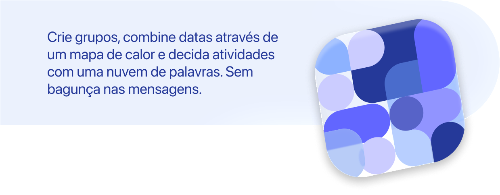

O jeito mais simples e visual de reunir quem você mais gosta
Download App
| Recursos | Gratuito | Premium |
|---|---|---|
| Criação de grupos | Até 5 grupos | Ilimitado |
| Convites por link | ✓ | ✓ |
| Votação colaborativa | ✓ | ✓ |
| Seleção de datas e horários | ✓ | ✓ |
| Mapa de calor de disponibilidade | ✓ | ✓ |
| Nuvem de palavras das atividades | ✓ | ✓ |
| Notificações de atualização | ✓ | ✓ |
| Anúncios | ✓ | ✕ |
| Integração com o calendário | ✕ | ✓ |
| Cupons de desconto em estabelecimentos parceiros | ✕ | ✓ |